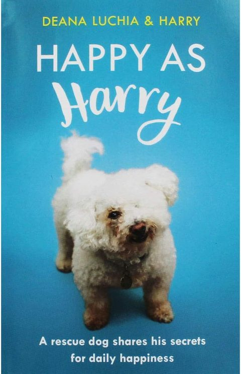
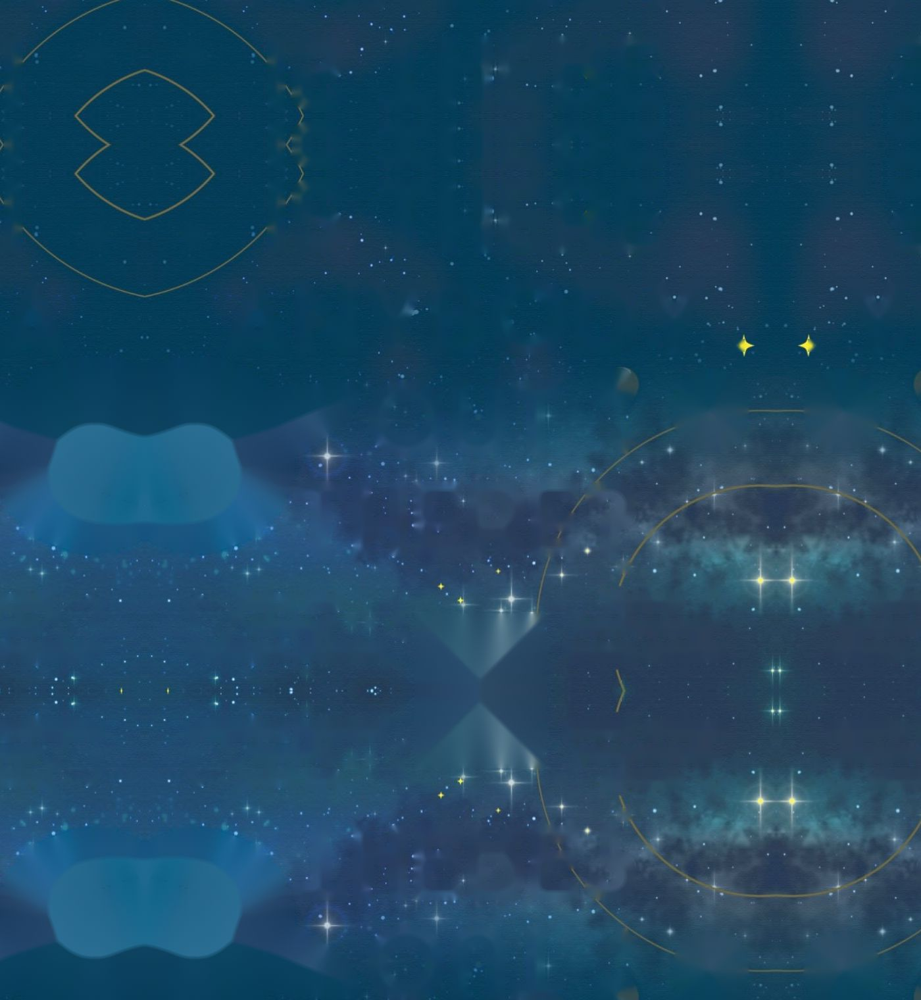
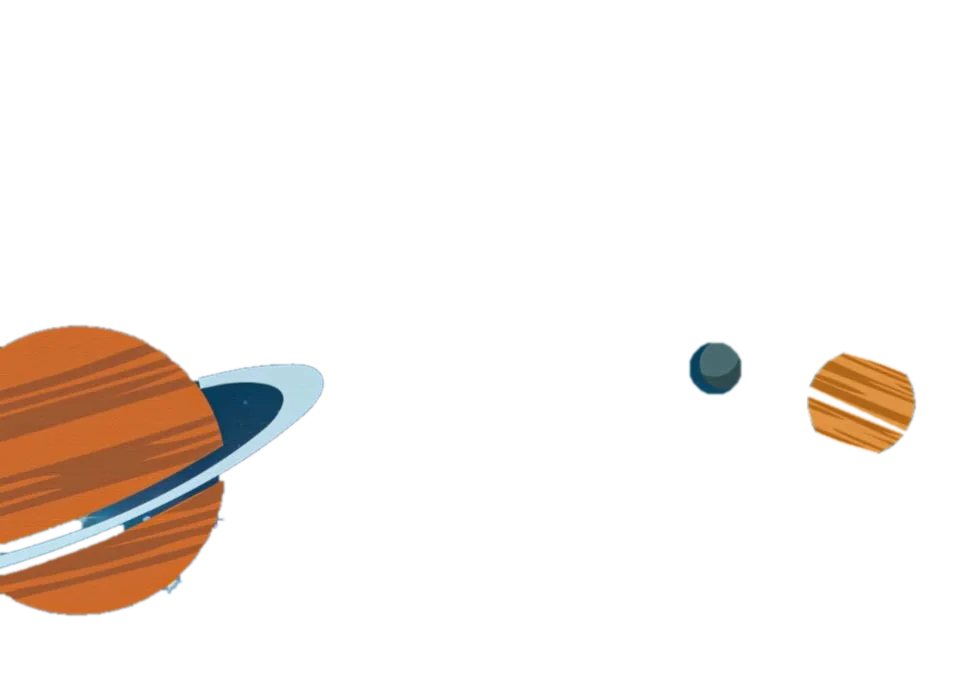
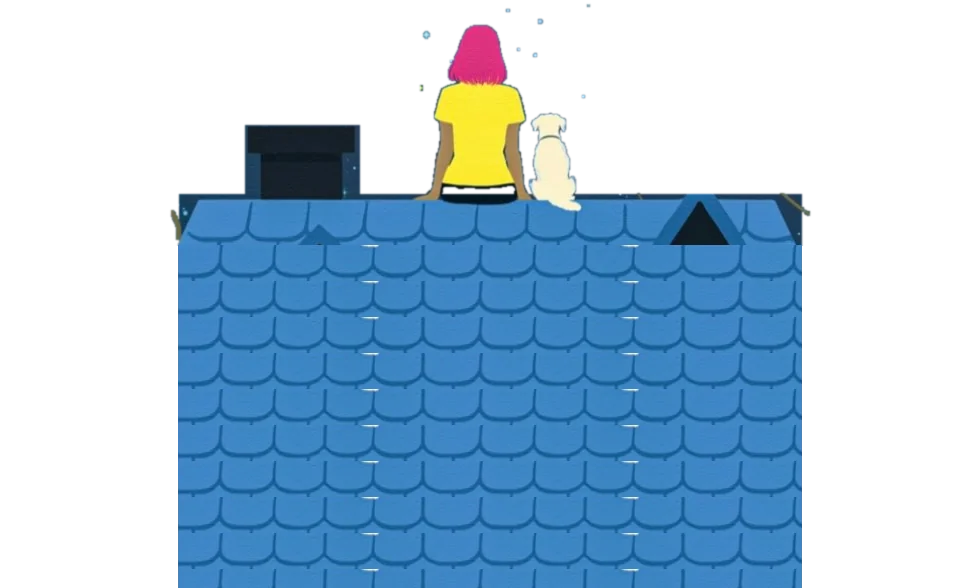
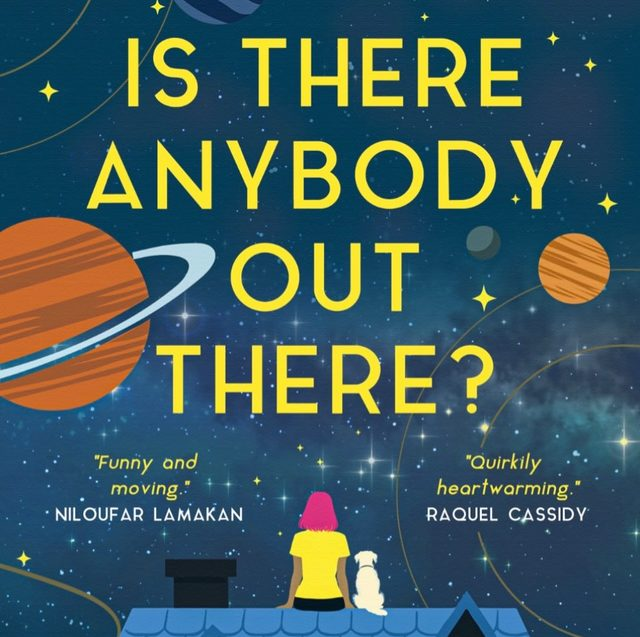
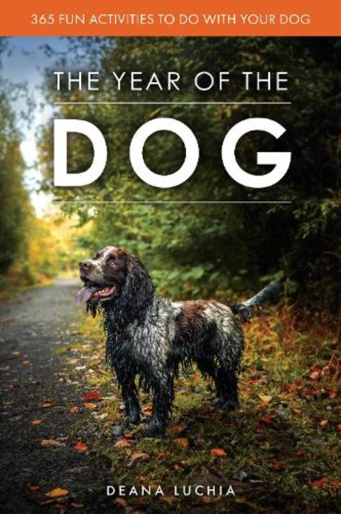
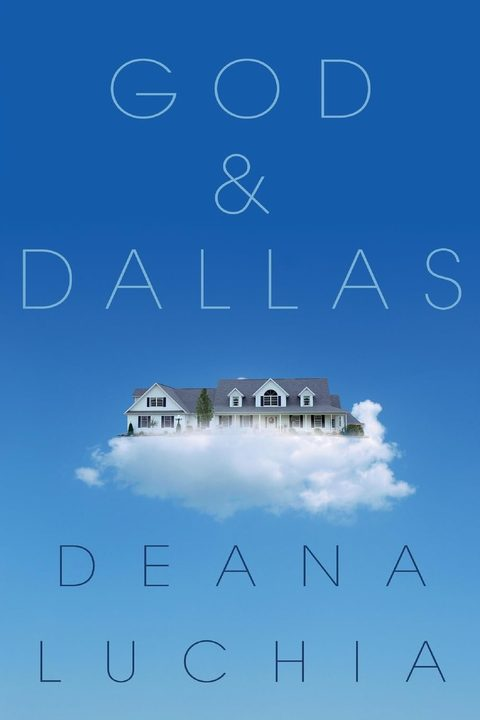

Happy As Harry
A kind, warm and funny guide to making the most out of life, narrated by a little rescue dog determined to find happiness in everything. Also in French.
Amazon



A new novel about how tricky it can be, as adults, to make friends.
And how important it is to keep trying until you find your tribe. You will find them.
Find the ebook on Amazon

Uplit, with aliens. Deana's new novel is about why we should all talk to strangers: how tricky it can be to make friends as an adult, and why it's worth going on looking until you find your people.
Out now as an ebook. Paperback to follow.
Find it on AmazonEvery story Deana writes has at least one dog in it: Great Danes, Chihuahuas, Border Terriers and mixed breeds, cavorting across the chapters and bringing comfort and laughter to characters struggling to make sense of the world.

A kind, warm and funny guide to making the most out of life, narrated by a little rescue dog determined to find happiness in everything. Also in French.
Amazon
365 fun activities to do with your dog, from yoga to waltzing, cinema trips to canoeing. A thank-you to beloved dogs everywhere.
Waterstones
Aware she is dying, Ginger has two obsessions: God and the TV show Dallas. A heartfelt, funny novel about mothers, daughters and the importance of friends.
AmazonDeana is a journalist and a creative writing teacher with an MA in Professional Writing, and she supports authors around the world.
Oxford Indie Book Fair, Sunday 22 November, 11am to 4.30pm, Examination Schools, High Street.